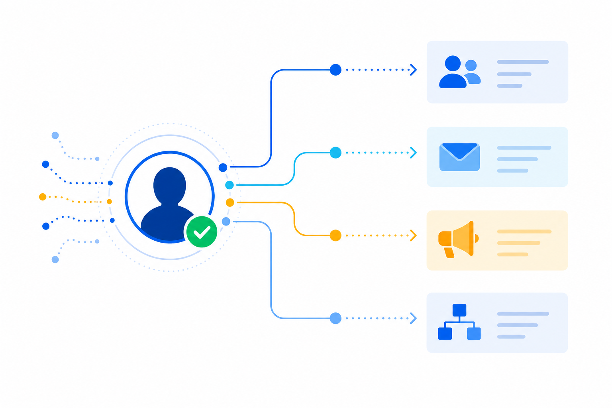

Know Who's On Your Website. By Name.
Turn anonymous website traffic into named visitors, intent scores, and activation audiences.
The Problem
Most website traffic remains anonymous.
You invest in attracting visitors, but most leave without identifying themselves. Marketing and sales are left guessing, wasting budget and missing opportunities.
How It Works
How It Works: The Identity Graph
We turn anonymous traffic into actionable people and deliver insights where your team already works.
Your Website
Anonymous visitors arrive from any channel or device.
Identity Resolution
Match visitors against the 4.5B+ global identity graph as they engage.
Enriched Profiles
Reveal name, email, company, role, and intent context.
Signals & Intent
Use 35B daily signals and intent scoring to prioritize action.

Activate
Push audiences to your CRM, MAP, ads, Slack, and more.
How It Fits Your World
Solutions for Every Organization
MyProspects helps teams reveal, understand, and activate website visitors no matter your mission.
See all solutionsB2B Sales & Marketing
Identify in-market accounts, prioritize high-intent prospects, and accelerate pipeline with visitor intelligence.
- Reveal target accounts and contacts
- Score intent and buying stage
- Drive pipeline and revenue
Recruitment
See who is visiting your careers page, what roles they view, and when to reach out before they apply elsewhere.
- Resolve careers page visitors
- Prioritize passive candidates
- Reduce cost-per-hire
B2C Products & Services
Turn anonymous shoppers into known customers and recover the traffic that abandons without converting.
- Resolve cookieless traffic
- Recover cart abandoners
- Activate across channels
Nonprofit
Know who is researching your cause before you ask for a gift, then reach donors and volunteers with the right channel.
- Identify donation page visitors
- Reveal donor and volunteer signals
- Activate with Local Sphere 1:1 marketing
Powerful Capabilities
Everything You Need to Win
Visitor Identity Resolution
Identify visitors by name at the moment they engage.
Intent Intelligence
35B daily signals reveal what buyers care about right now.
Enrichment That Matters
Firmographic, contact, and technographic data that powers action.
Seamless Activation
Sync audiences to CRMs and Marketing platforms.
Privacy Compliant
Enterprise-grade security and privacy you can trust.
Close the Loop
Activate Offline + Online
MyProspects connects digital identity to real-world locations so you can retarget in the right places and drive foot traffic.
Location Based Targeting
Reach individuals whenever they visit locations of interest.
Cross-Channel Reach
Engage across mobile, display, social, and CTV.
Measurement
Measure visits and lift with real-world outcomes.
Privacy-First
People-based activation with privacy at the core.
Simple, Transparent Pricing
Start with a 30-day free trial.
Explore MyProspects with no long-term commitment. Month-to-month contracts and onboarding built for speed.
Full platform access
Live in 24-48 hours
Start Your Free Trial